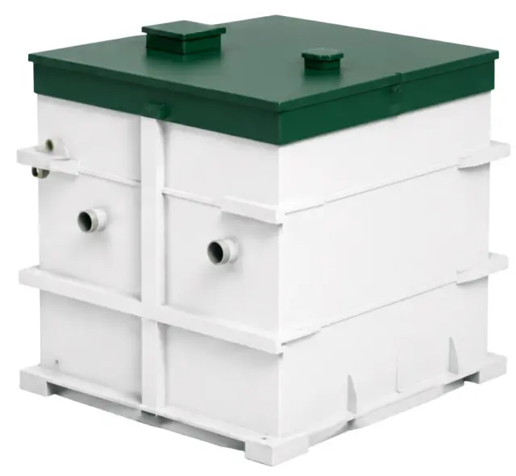
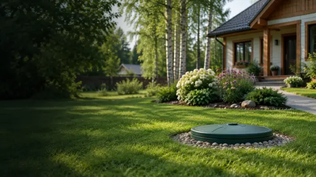
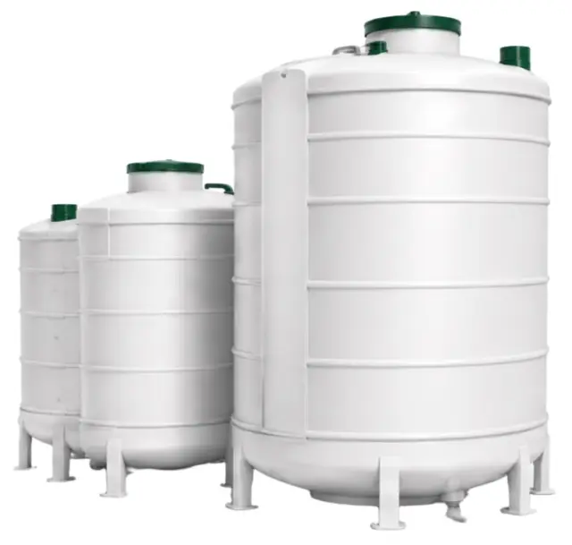
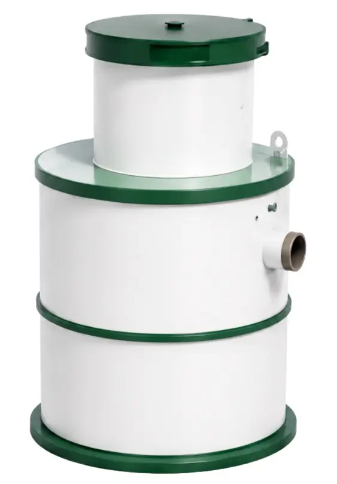
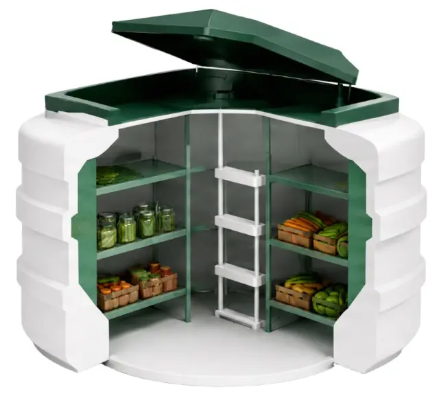

Станции биологической очистки
монтаж от 20 000 ₽
- Очищают стоки частного дома
- Без запаха и частой откачки
- Подбор по числу жильцов и грунту

НОВОСИБИРСК И ОБЛАСТЬ · ДОСТАВКА ДО УЧАСТКА
Инженер заранее изучает грунт и уровень грунтовых вод, считает водопотребление и подбирает станцию. Гарантия 2 года на монтаж и 5 лет на оборудование.
СТАНЦИИ И ЦЕНЫ
Цена монтажа — с сайта компании. Стоимость станции зависит от числа жильцов, грунта и уровня грунтовых вод — её называет инженер после выезда.

монтаж от 20 000 ₽

по смете

по смете

по смете
Ещё делаем: системы водоочистки, дренаж и осушение участков, обслуживание автономной канализации. Спросить цену →
КАЛЬКУЛЯТОР
Двигайте ползунок — цена считается сразу. Телефон спросим только если захотите точную смету.
НАШИ РАБОТЫ
Изображения с сайта компании. Нажмите, чтобы увеличить.
КАК МЫ РАБОТАЕМ
Заранее изучает состав грунта, уровень грунтовых вод и считает водопотребление.
Подбираем станцию под ваш участок, фиксируем цену и срок.
Привозим септик и комплектующие к согласованной дате, заранее уточняем подъезд и место разгрузки.
Монтируем, запускаем систему, даём гарантию: 2 года на работы, 5 лет на оборудование.
ГАРАНТИИ
Официальная гарантия на все работы по установке.
Гарантия производителя на автономную канализацию.
Станцию подбирают по анализу грунта и реальному потреблению воды, а не «на глаз».
ВОПРОСЫ
Монтаж с доставкой — от 20 000 ₽. Цена станции зависит от числа жильцов, грунта и уровня грунтовых вод: инженер называет её после выезда на участок.
Установка занимает от одного дня: приезжаем, монтируем и запускаем систему.
Он изучает состав грунта, проверяет уровень грунтовых вод и считает потребление воды — от этого зависит выбор станции и способ её крепления.
Проводим плановое и аварийное обслуживание: диагностика, очистка, замена комплектующих.
ЗАЯВКА
Оставьте телефон — перезвоним и договоримся о выезде. Подбор из калькулятора подставится сам.
+7 (913) 766-40-90 aquamaster54@ya.ruНовосибирск и область · доставка до участка